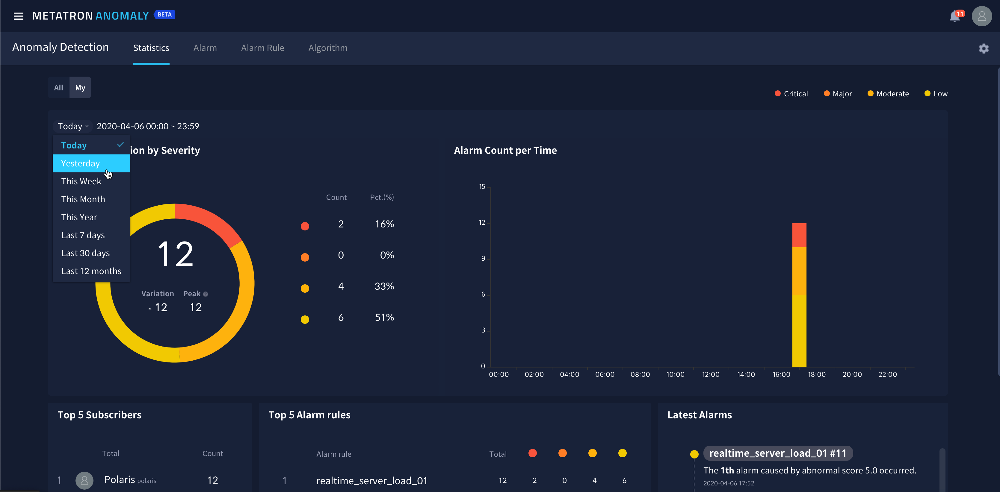

Statistics¶
The Statistics tab menu displays general statistics regarding alarms. This page gives users a view of various statistics regarding alarms including their severity, occurrence time, and rules.
The page is comprised as follows:

- Alarm Distribution by Severity: The distribution of alarms by severity is displayed.
- Alarm Count per Time: The alarm frequency by time is displayed.
- Top 5 Subscribers: The top 5 subscribers who have been notified of the highest number of alarms are displayed.
- Top 5 Alarm Rules: The top 5 alarm rules that resulted in the highest number of alarms are displayed.
- Latest Alarms: The most recent alarms are displayed.
The period used to generate statistics can be modified in the period menu on the top of the page.
